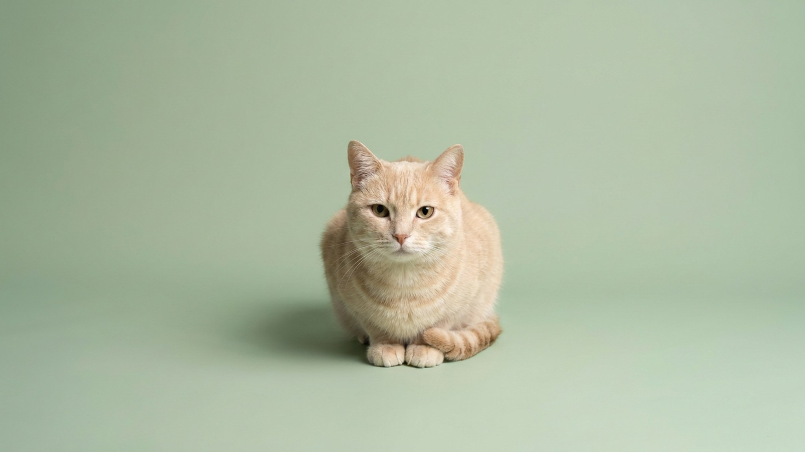

Приходишь домой — и кошка тут же ввинчивается между ног, обходит восьмёркой, ведёт по тебе боком и хвостом. Это не просто «соскучилась» и далеко не всегда «дай есть». В одном движении кошка успевает поздороваться, собрать информацию и оставить на тебе метку «свой». Разберём, что стоит за каждым касанием — и как понять, когда за ним просьба, а когда сигнал, что что-то изменилось.
🐾 У вашей кошки так же?
Расскажите в AnimaLife, как ведёт себя ваш питомец, — приложение объяснит причину и даст пошаговый план. Бесплатно, без записи к специалисту.
Разобрать свой случай → Разобрать в MAX →
У вас iPhone? AnimaLife есть в App Store
На щеках, у основания хвоста и по бокам у кошки есть железы, выделяющие пахучие метки — для нашего носа незаметные. Проводя по вам мордочкой и боком, кошка наносит свой запах и одновременно собирает ваш. Так формируется общий «семейный» аромат стаи: свои пахнут одинаково.
Для кошки это способ сделать мир предсказуемым и безопасным. Вы, диван, углы мебели, другой питомец в доме — всё, что помечено, воспринимается как «своё» и не тревожит. Поэтому после стирки вашей одежды или возвращения из поездки кошка часто трётся активнее обычного: знакомый запах ослаб, и она обновляет метку.
Тереться о ноги с поднятым трубой хвостом — дружелюбный ритуал приветствия, который кошки приносят из детства: так котята встречают маму-кошку. Взрослая кошка переносит этот жест на близких людей.
Кошки быстро учатся: если после того как потёрлась о ноги, тут же появляется еда или внимание, поведение закрепляется. Отсюда настойчивые «восьмёрки» по утрам и у кухни.
🐾 Хотите понять, что кошка говорит вам?
Опишите ситуацию или пришлите видео в AnimaLife — AI разберёт поведение вашего питомца и подскажет, что делать. Бесплатно, ответ за минуту.
Разобрать поведение → Разобрать в MAX →
У вас iPhone? AnimaLife есть в App Store
🐾 Понравился разбор?
Подпишитесь на канал — каждый день разбираем по одному тревожному симптому у кошек и собак: что в пределах нормы, а когда пора к врачу. Подпишитесь, чтобы не пропустить разбор, который может спасти здоровье вашего питомца.
Само по себе трение о ноги — нормальное, здоровое общение. Обращать внимание стоит не на него, а на резкие перемены в привычном рисунке поведения.